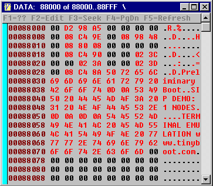

Hex Dump Windows
All of the hex dump windows use the class defined in CLASHEX.F. When open, they are continuously updated. The address range spanned by the window is read from the target board or from host PC memory. Each hex window has two buffers: one for current data and one for previous data. When the current data is different from the previous data, the color of the changed data is colored red. At startup, the previous data buffer is zeroed so initially any nonzero data will show up red.
| Table HW1. Key usage | |
| F1 | Help screen |
| F2 | Toggle browse/edit (white = editable) |
| F3 | Find next changed memory location |
| Shift-F3 | Find previous changed memory location |
| F4 | Next memory page |
| Shift-F4 | Previous memory page |
| F5 | Upload entire page |
| F6 | Start of data memory |
| F7 | Start of specialty memory |
| Tab | Toggle cursor between Hex and ASCII |
| ctrl-Z | Clear persistence (red -> black) |
| ctrl-C | Copy table to clipboard |
| ESC | Close window |
Sample window.

The five hex dump windows:
| IMG | ROM image resident on the PC |
| CODE | Code space on target |
| DATA | Data space on target |
| REG | Register image on target |
| EE | Non-volatile boot memory on target |